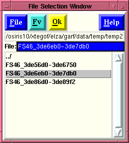
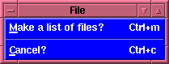
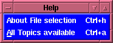

File Selection Window
File Selection Window

The "File Selection" window allows the user to perform several
useful functions depending upon:
- How the File selection window was called.
- If the
window is called from File
menubutton within the Parameter
Editing window, (and no Entry-box had been
previously selected) then the file selected is not
directly associated
with an "entry box" within the Parameter Editing
window. However, the default is to associate it with the
first entry box. There are two ways too change this
behavior.
- You must have selected an Entry-box (place the
cursor on and Entry-box and press Button-1), and
then use either Control-f, or use the pull-down
menu. Then any items selected will be inserted in
the entry-box that was selected.
- You must select an entry
box and hit the third (right-most) mouse button -
Button-3. (If Button-3 is already used in your
window-manager, you can also use Control-Button-3 or
Shift-Button-3.)
Of course any file high-lighted in the File selection window
can be copied into any entry box by using the left-mouse-button
(Button-1) to select a file, and then selecting an entry
box within
the Parameter Editing window, and using the
middle-mouse-button (Button-2) to insert the filename.
- If this window was called by selecting an entry box from
within the Parameter Editing window and clicking the
right-most-mouse-button (Button-3) within an entry-box,
any file selected with the File selection window (or
associate windows, e.g., the
List of selected items
window) will appear in that box
once the "OK" button is clicked (or other
terminating action is taken). This also causes
the File Selection window (and associated windows) to
disappear.
- Actions taken by pressing a button after a file is selected:
- If the "File" menubutton is selected, the
user will be presented with a menu which contains a
series of options.

- Make a list of files?
(also
accessible by pressing Control-m in the File
selection window):
causes a
"List of
selected items"
window to appear. And operates in connection
with the right-most-mouse-button (Button-3). Files selected
in the "File selection window" by depressing the
right-most-mouse-button (Button-3) will appear in
the "List of selected items" window.
- Cancel? (also accessible by
pressing Control-c):
closes the "File
selection window" without returning anything to the
"Parameter Editing Window".
- If the "Fv" button is used then the
"fits_viewer"
program is called. This program allows the user to view
FITS files as well as examine their contents and plot
the information. Thus once you select a file you can hit
the "Fv" button to examine the contents of that file,
before inputting it into the parameter entry box. This
button is provided as a convenience and launchs Fv which
is a separate program.
- The "OK" button actually has two usages
depending upon how the "File Selection" window was
called. Basically, if the "File Selection" window was
called from the File
menu, than the "OK" button is not bound to any entry-box
(although the tool now assumes you wish the output sent
to the first entry-box), however in general
the user should only use this when using the mouse to
copy the file into memory, and paste the selected file
to a particular entry-box using the middle-mouse-button
(Button-2). If the "File Selection" window was
called by using the right-mouse-button (Button-3) from within an
entry-box than the selected file is inserted into that
entry-box.
If the user has selected the "Attempt to uncompress
files automatically?" option from the
"Flaunch" window's
"Option"
menubutton
- If the "Help" menubutton is selected, the
user will be presented with a menu which
contains a series of options.

- About File selection
(also
accessible by pressing Control-h):
displays the hypertext
help available on the "File selection window", i.e.,
the page you are presently looking at.
- All Topics available (also
accessible by pressing Control-a):
Displays the hypertext
help available on all Topics, i.e., a general INDEX
of available help pages for Flaunch are displayed,
allowing the user to select which windows or
behavior they wish to learn about.
Note: The Directory Selection window and the File Selection
window rely upon the same procedures, as such they cannot
co-exist at the same time without the potential for
posible conflicts arising. Thus the window is destroyed and
recreated each time it is called. This should not be a
problem is the user is calling this window as intended.
This window should be called, and used immediately after its
creation before the user moves on to other things.
INDEX
Brian K. Elza
Last modified: Tue Jul 29 12:13:34 EDT